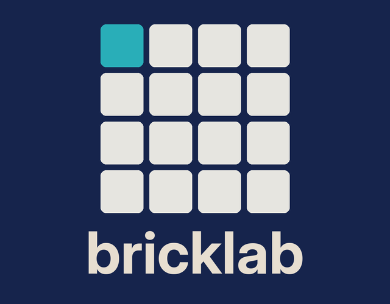

Jam a loop in seconds, then open it up: 16 patterns of 6 tracks, a machine per track, Moog-style leads and basses, your own samples, a drum machine, and effects on every track. Same engine and buttons as Brickchord, built out into a pocket Digitakt.
Just want to play chords? Brickchord is the simple one. Want them to glide? That's Brickglide.
Press R2, play, and a layer records with the sound you are playing. It closes at the bar and loops. Press R2 again for the next layer. Six lamps in the header show your layers; one button undoes the last one. No pattern pages, no arming, no menus. When you want to edit, it is all still there underneath.
Tap steps to build a beat. Four lanes, sixteen steps, the way track 1 works on the Brick.
112 BPM
The Brickchord engine: 23 sounds, strum, harp, arps, voicings, all on seven buttons.
Their own banks through a Moog-style 4-pole ladder filter: Fat Saw, Sync Lead, Acid, Brass Lead, Moog Bass, Reese, Pluck Bass and more. Glide included.
Slow, evolving sounds that slide between degrees. The left stick pulses, swells, thins or blooms the drone while it plays.
Drop WAVs on the card and play them pitched across the buttons, with start, end, reverse, loop, tune and a granular mode that turns a second of audio into a pad.
A 16-step grid on track 1 with five kits (Classic, 808, 909, Lo-fi, Acoustic) and your own WAV kits, swing, accents, ghosts, humanize, per-lane level and tune.
Each track has its own rack of ten effects, a live filter, level, pan and sends, and picks one of two FX buses, each with its own reverb and delay type.
Step grid for every track, 16 patterns you chain on the song page, count-in, record quantize that snaps starts and lengths, a metronome, and a track page where one tap copies a track's whole setup to every pattern.
bricklab folder, Bricklab.sh and the images folder into roms/ports on the Brick's SD card (over the network share or with a card reader).Tested on knulli-a133-trimui-brick-pro-beta-20260921. Bricklab and Brickchord install side by side and share a sound cache. Samples go in roms/ports/bricklab/samples/.
Source and issues: github.com/michaeltietjen/brickchord · Brickchord